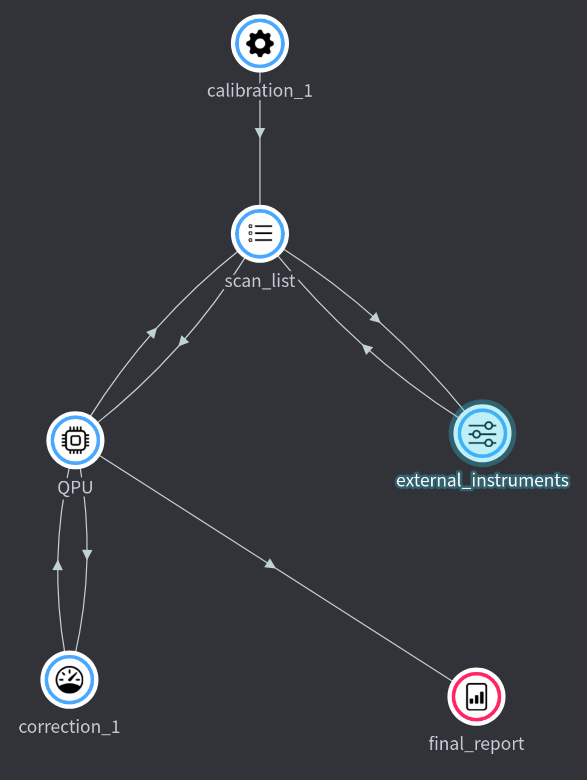

Workflow¶

Workflow allows you to write an experimental workflow as a story in a code that reads like a prose. You can keep thinking at high level how you want to orchestrate your experiment with everything you need — all documentation of different modules, and inputs and outputs specifications — available on demand thanks to usual auto-completion features provided by IDE. No matter what is your programming languages of choice for writing nodes, you have a single place to control them all, as a code. You can use as little or as much Python as you want in authoring the experiment, keeping it to bare minimum that is almost only consisting of problem-specific names defined by you, or use full-blown Python for efficient programmatic generation of large complex workflows.
Note
When using Entropy Hub, code for nodes and workflows can be edited in Experiments panel with Code view turned on.
Defining workflow¶
Workflow is specified as a Python file that in general looks like
from entropylab.flame.workflow import Workflow
import entropynodes.library as expNodes
# 1. Define workflow
wf = Workflow("A day in office", description="What happens in local office")
# 2. START workflow
boss = expNodes.GrumpyAdministrator("boss")
clerk = expNodes.CheerfulNode("clerk", customer=boss.o.clerk_request)
boss.i.clerk_salary = clerk.o.requested_salary
wf.register() # 3. END and register workflow
To define workflow we import Workflow from entropylab.workflow and define its
name and longer description. All the processing nodes, that we defined using
NodeIO and run them individually, are available as entropynodes.library. In
the example above we import those as expNodes.
We then proceed by describing workflow. We make instances of processing nodes,
give them unique name that will help us later track them in the workflow view,
and connect their inputs and outputs. Note that there can be many instances of a
node defined under expNode. Each instance will be running in parallel,
allowing parallel processing.
Inputs and outputs of the nodes are listed under .i and .o parameters
respectively. If you use IDE with Pylance like Visual Studio, provided
integrated in Entropy Hub, you will be able to see all possible inputs and
outputs as well as their description and units. Inputs of the nodes can be set
during creation of the instance: e.g. customer=a.o.clerk_request sets customer
input of node named clerk to output of boss node). Alternatively, they can
be set later on as we do when we pass a clerk's request for salary to the boss
boss.i.clerk_salary = clerk.o.requested_salary. Not all possible node inputs
have to be specified here: unresolved ones become parameters to be provided for
the specific run of this workflow, as we describe in the following.
Parameters and run-time variables¶
Nodes that make up the workflow have inputs:
-
Some of the inputs might be resolved during the running of the workflow, by connecting outputs of other nodes: these are run-time variables.
-
Other inputs will be specified by the user before running of the workflow: these are parameters.
Once workflow is defined, user can execute in command line workflow.py file
that specifies workflow
to automatically generate a list of all parameters of the workflow as a simple
JSON file parameters.json. This is a list of unresolved input values that have
to be specified before executing this workflow can be executed.
Note
If there is existing parameters.json file that already specifies some of the
values of the workflow, running python workflow.py will overwrite this file,
but, it will try to reuse any values that were set in the old file, and write
them also in the new file (as long as there is a match between some of the old
and new node names and their variable names).
Executing a workflow¶
From command line¶
in general
usage: execute.py [-h] [-w WORKFLOW] [-p PARAMETERS] [-t MAX_EXECUTION_TIME] [-d STATUS_CHECK_INTERVAL]
Flame executor of parametrized workflows
optional arguments:
-h, --help show this help message and exit
-w WORKFLOW, --workflow WORKFLOW
Python file that defines main entropylab.Workflow (default workflow.py)
-p PARAMETERS, --parameters PARAMETERS
JSON file that resolves workflow parameters
-t MAX_EXECUTION_TIME, --max-execution-time MAX_EXECUTION_TIME
Maximal execution time in s
-d STATUS_CHECK_INTERVAL, --status-check-interval STATUS_CHECK_INTERVAL
Node status check interval in s (default 1 s)
From user interface¶
There are two possible ways to submit a job (=workflow + parameters) for execution:
Experiment > workflow view > Run
Experiment > Job list > Add